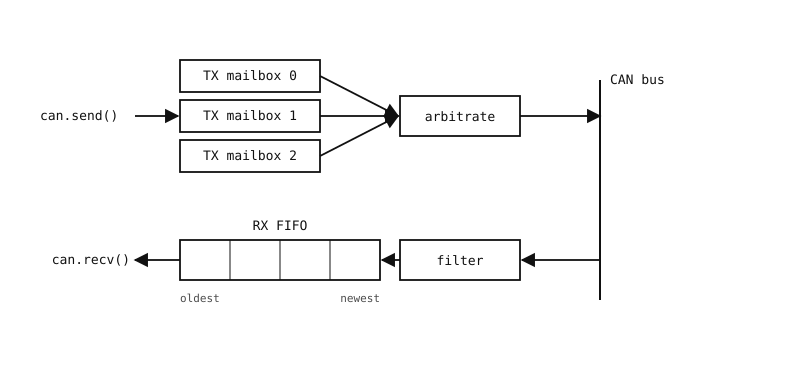

3.26. Kodda CAN bus¶
machine.CAN, bir donanım CAN denetleyicisini sarmalar. Onu bus id’si ve bir bit hızıyla ayağa kaldırın:
from machine import CAN
can = CAN(1, 500_000)
can.set_filters(None) # accept all incoming IDs
Bit hızı, bus üzerindeki diğer her düğümle tam olarak eşleşmelidir – 125_000, 250_000, 500_000 ve 1_000_000 yaygın değerlerdir. set_filters(), denetleyicinin hangi ID’leri geçireceğini yapılandırır; None her şeyi kabul etmek anlamına gelir (bir bağlantıyı ayağa kaldırırken yararlı, bus meşgul olduğunda daha az yararlı).
3.26.1. Denetleyicinin içinde¶
Kameranın Python kodu ile bus arasında üç donanım parçası bulunur – TX posta kutuları, bir kabul filtresi ve RX FIFO. Her biri, aşağıda kullanılan CAN API’sinin bir parçasına eşlenir.

Yazılım ile bus arasındaki denetleyicinin TX posta kutuları, kabul filtresi ve RX FIFO’su.¶
TX posta kutuları. Kameranın
send()aracılığıyla devrettiği ancak henüz bus’a ulaşmamış giden çerçeveleri tutan küçük bir donanım yuvası kümesi (tipik olarak üç). Bus boştayken denetleyici en düşük numaralı ID’ye (en yüksek öncelik) sahip posta kutusunu seçer ve onun adına bus için tahkim eder. Posta kutusunu kamera seçmez; denetleyici birini atar ve onun indeksinisend()üzerinden döndürür.Kabul filtresi. Gelen her çerçevenin ID’sini bir desen listesiyle karşılaştıran ve eşleşmeyen her şeyi atan yapılandırılabilir donanım. Geçen çerçeveler RX FIFO’ya devam eder; reddedilen çerçeveler hiçbir zaman Python’a ulaşmadan denetleyici tarafından atılır.
set_filters()bu desenleri yapılandırır.RX FIFO. Bir ilk giren, ilk çıkar kuyruğu – gişedeki bir sıra gibi, ilk giren çerçeve aynı zamanda ilk çıkan çerçevedir. Denetleyici, alınan çerçeveleri geldikçe kuyruğun arkasına ekler ve
recv()onları aynı sırayla önden çeker. Kuyruk önemlidir, çünkü Python başka bir yerde meşgulken bus çerçeveleri arka planda yakalar; kamera daha sonra, FIFO taşmadığı sürece hiçbirini kaybetmeden onları birer birer boşaltır.
3.26.2. Çerçeve gönderme¶
send() iletim için bir çerçeve kuyruğa alır:
can.send(0x123, b"\x01\x02\x03\x04")
İlk argüman ID’dir (standart bir çerçeve için 11 bitlik bir tamsayı); ikincisi yüktür (CAN Classic için 0 ila 8 bayt). Çağrı, çerçevenin girdiği donanım posta kutusunu tanımlayan küçük bir tamsayı indeksi döndürür. Denetleyici, bus üzerindeki diğer iletcilerle tahkim eder ve yazılımdan başka bir yardım almadan gerektiğinde yeniden iletir.
Genişletilmiş (29 bitlik) ID’ler için, CAN.FLAG_EXT_ID bayrağını üçüncü argümanla OR’layın:
can.send(0x18FF1234, b"hello", CAN.FLAG_EXT_ID)
3.26.3. Çerçeve alma¶
Denetleyici hiçbir filtre kurulu olmadan başlar ve gelen her çerçeveyi atar. recv() herhangi bir şey döndürmeden önce, set_filters() bir kez çağrılmalıdır – en basit biçim, her ID’yi kabul eden None‘dır:
can.set_filters(None) # accept every frame
recv() ardından alma FIFO’sundaki bir sonraki çerçeveyi döndürür ya da bekleyen hiçbir şey yoksa None döndürür:
msg = can.recv()
if msg is not None:
can_id, data, flags, errs = msg
print("got", hex(can_id), bytes(data))
Bus, RX FIFO’yu arka planda doldurur; bu nedenle ana döngü onu yineleme hızında boşaltır. FIFO, boşaltmalar arasındaki en uzun boşluktan daha derin olduğu sürece hiçbir çerçeve kaybolmaz.
3.26.4. Filtreler¶
Gerçek bir bus genellikle kameranın umursamadığı çerçevelerle meşguldür. Donanım filtreleri, denetleyicinin istenmeyen ID’leri FIFO’ya ulaşmadan atmasını sağlar. set_filters() bir (id, mask, flags) demet listesi alır; bir çerçeve, mask ile maskelenmiş ID’si yapılandırılmış id ile eşleşirse filtreyi geçer:
# Accept only IDs 0x100 - 0x10F (mask off the bottom 4 bits)
can.set_filters(((0x100, 0x7F0, 0),))
# Accept IDs 0x300 and 0x700 exactly
can.set_filters(((0x300, 0x7FF, 0),
(0x700, 0x7FF, 0)))
Eşleşmeyen çerçeveler denetleyici tarafından atılır ve recv()‘de hiçbir zaman görünmez; bu da hem arabellek alanından hem de CPU zamanından tasarruf sağlar.
3.26.5. Hata durumları ve kurtarma¶
Gerçek bir CAN bus iletim hataları toplar – toprağa kısa devreler, eksik düğümler, bitleri bozan elektriksel gürültü. Denetleyici bu davranışı izleyen iki sayaç tutar: bir İletim Hatası Sayacı (TEC) ve bir Alma Hatası Sayacı (REC); her biri denetleyici bir hata algıladığında artırılır ve başarılı bir aktarımdan sonra azaltılır. Sayaç değerleri denetleyiciyi dört durumdan birine sokar:
Error Active (TEC ve REC her ikisi de 96’nın altında). Normal çalışma. Düğüm bir bus hatası algıladığında dominant bir aktif hata çerçevesi iletir; bu da diğer her düğümü devam etmekte olan çerçeveyi atmaya zorlar, böylece gönderen yeniden deneyebilir.
Error Warning (sayaçlardan biri 96’ya ulaşır). Hala bus üzerinde tamamen etkin – uyarı durumu, bir davranış değişikliği değil, hataların biriktiğine dair bir yazılım sinyalidir.
Error Passive (sayaçlardan biri 128’e ulaşır). Düğüm hala bus üzerindedir ancak dominant hata çerçeveleri göndermeyi durdurur; hatalar artık pasif (recessive) hata çerçeveleriyle bildirilir, böylece arızalı bir düğüm herkes için bus’ı sürekli bozmaya devam edemez.
Bus Off (TEC 256’ya ulaşır). Denetleyici bu düğümün katılmak için fazla güvenilmez olduğuna karar vermiştir. Bus’tan bağlantısını keser, iletmeyi ve onaylamayı durdurur ve yazılım onu açıkça yeniden başlatana kadar dışarıda kalır.
İlk üç geçiş tamamen otomatiktir – sayaçlar başarılı çerçevelerden sonra azaldıkça, denetleyici müdahale olmadan kendini Error Active’e doğru geri taşır.
Bus Off, yazılım eylemi gerektiren tek durumdur. restart() denetleyiciyi sıfırlar ve onu Error Active’e döndürür. Tipik bir desen, durumu ana döngüden kontrol etmek ve bus’a yatışması için zaman vermek üzere kısa bir gecikmenin ardından yeniden başlatmaktır:
import time
from machine import CAN
can = CAN(1, 500_000)
can.set_filters(None)
while True:
if can.state() == CAN.STATE_BUS_OFF:
time.sleep_ms(100)
can.restart()
# ... rest of the loop
Geçerli sayaç değerleri tanılama için get_counters()‘dan elde edilebilir – aksi halde sessiz bir bus üzerinde sürekli tırmanan bir TEC genellikle kablolamaya, sonlandırmaya veya yanlış yapılandırılmış bir bit hızına işaret eder.